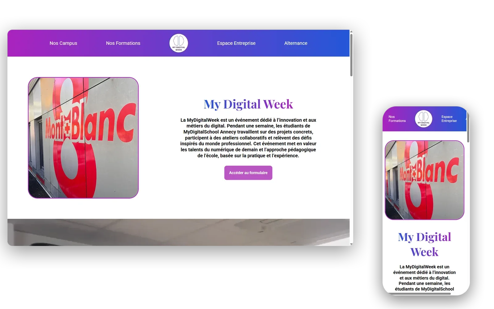

My Digital Week
Partiel école sur 4 jours, soutenance le vendredi. Sujet posé par l'école : produire tout l'écosystème de leur événement annuel, la My Digital Week. On était trois, je tenais la double casquette dev + design pendant que mes deux camarades couvraient marketing et communication. Tout le monde s'aidait sur tout.

Le partiel et l'équipe
Quatre jours en groupe de 3 pour produire tout l'écosystème d'un événement, soutenance le vendredi. J'étais sur le dev et le design, mes deux camarades sur le marketing et la communication. On se filait des coups de main partout dès qu'un truc dépassait. C'est ici que j'ai compris que le boulot d'équipe, ce n'est pas "tu fais ta case, je fais la mienne". C'est "on a un livrable commun, et tout le monde colmate là où ça déborde."
Le double rôle dev + design
Tenir le dev et le design en même temps, ça a un avantage immédiat : pas de friction entre la maquette et l'intégration, parce que c'est le même cerveau qui sort les deux. Je dessinais sur Figma le matin, je codais l'après-midi, je revenais sur le Figma quand le code m'apprenait qu'un détail ne tenait pas. Plus efficace que d'attendre une nouvelle version de la maquette à chaque retour. Sur le site final : 5 sections, un carrousel de 7 visuels, une video background, deux pages publics (futurs étudiants / futurs intervenants), un formulaire d'inscription avec choix de campus parmi 17 villes.
Les détails techniques
Le carrousel tourne avec un setInterval toutes les 4 secondes qui change la classe active. JS vanilla, pas de plugin. La video background est en autoplay/muted/loop/playsinline pour passer sur mobile. Pour le reste : Flexbox et CSS Grid. Avec le recul, il y a des choses que je referais autrement : moins de fonts chargées (j'en avais empilé 8 sans tri), un form avec validation côté client, un carrousel avec contrôles manuels. Mais sur un partiel de groupe en 4 jours, c'était la bonne version à rendre.